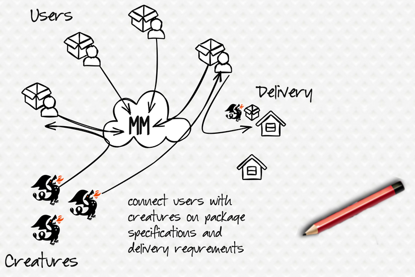
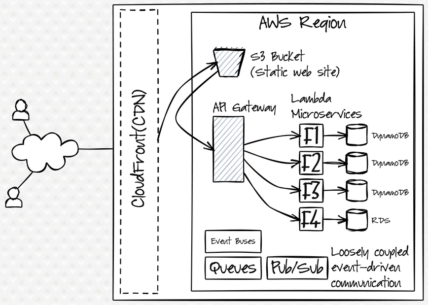
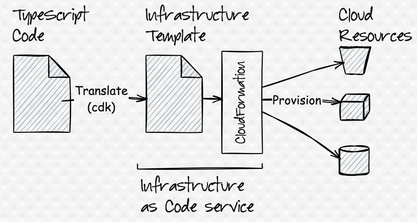

The bustling café near MagicTech Solutions headquarters was Maya's favorite spot for mentoring sessions. She arrived early, securing a corner table with plenty of space for her signature napkin diagrams. As the new junior developer approached, Maya smiled and waved him over.
"You must be Ethan," Maya said, extending her hand. "I'm Maya. The Director of Engineering mentioned you're eager to learn cloud architecture."
Ethan nodded enthusiastically as he sat down. "Thanks for taking the time to mentor me. I've done some frontend and backend work, but cloud infrastructure is new territory. The Director mentioned something about a package delivery project?"
"That's right. We're building MagicMail from the ground up.” Maya replied, sliding a company-branded notebook across the table. "This is going to be your cloud architecture journal. I suggest you take notes because we're going to build something amazing together."
Maya took a sip of her coffee. "Before we dive into the technical details, let's talk about what MagicMail actually is. Our Product Manager calls it 'the most whimsical delivery platform ever conceived.'"
Ethan raised an eyebrow. "Whimsical?"
"MagicTech Solutions wants to disrupt the package delivery industry. Instead of trucks and drones, MagicMail dispatches magical creatures to transport packages."
"Magical creatures?" Ethan laughed. "Like dragons and unicorns?"
"Exactly! Dragons for urgent deliveries, phoenixes for temperature-sensitive items, griffins for heavy packages. Each creature has different capabilities and handling requirements." Maya grabbed a napkin and began sketching. "It's similar to ridesharing or resource allocation systems, but for packages and magical couriers. The platform connects users with available creatures based on package specifications and delivery requirements."
 A conceptual diagram illustrating the MagicMail service.
"That sounds... ambitious," Ethan said, watching Maya's sketch take shape.
"It is. And that's where cloud computing comes in. We need to build a scalable, resilient system that can handle thousands of concurrent deliveries, track magical creatures in real-time, manage user accounts, and ensure packages get delivered correctly."
MagicMail Magical creature package transport services
Maya flipped to a fresh napkin. "Let me show you the complete architecture we're going to build. I'll introduce the concepts first, and then mention which cloud services we'll use to implement them. Don't worry about understanding everything now—we'll build it piece by piece over the coming weeks."
She began drawing a comprehensive diagram, narrating as she went.
High-level architecture diagram of MagicalMail service
"At a high level, we're building a cloud-native, microservices-based architecture. Let's break it down into layers:
First, we need a way to deliver our web application to users worldwide quickly and efficiently. In cloud terms, we'll use a content delivery network (CloudFront) and static website hosting (S3). Think of S3 as a place to store our website files, and CloudFront as a global network that caches those files closer to users for faster loading.
Next, we need an API layer to handle requests from the frontend. This acts like a central entry point or traffic controller, routing requests to the right backend services. We'll implement this using API Gateway."
Ethan leaned forward, studying the diagram. "And what's happening behind this API layer?"
"That's where the core business logic lives," Maya smiled. "We'll create several microservices, each a small, independent application with a specific responsibility:
- One service matches delivery requests with available creatures (like a dispatch system).
- Another tracks creature availability and capabilities (a resource management service).
- A third provides real-time package location updates (a tracking service).
- And another handles user accounts and profiles (an authentication/user management service).
For these services, we'll use a serverless approach with Lambda. This means we write the code for each function, and AWS handles running it and scaling it automatically without us managing servers."
"What about storing data?" Ethan asked.
"Good question. Each microservice needs its own data storage. For data that needs flexibility, like creature capabilities or package details, we'll use DynamoDB, AWS's NoSQL database service. It's super fast and scalable. For data that fits a more traditional table structure, like user relationships or billing information, we'll use Amazon RDS, their managed relational database service."
"And how do these services communicate with each other?" Ethan asked, pointing to the lines Maya had drawn between components.
"Another excellent question! Instead of direct calls, which can make services tightly dependent on each other, we'll use an event-driven approach. When something significant happens (like a package being ready for pickup), a service publishes an event. Other services interested in that event (like the creature dispatch service) can subscribe and react accordingly. This creates loose coupling. We'll use AWS services like event buses, queues, and notification systems to implement this."
Maya set her pencil down. "Now, here's where it gets interesting. We could build all this by clicking buttons in the AWS web console, configuring each piece manually."
"I'm guessing we're not going to do that," Ethan said with a smile.
"Absolutely not. We're going to use Infrastructure as Code (IaC). This means we'll write actual code to define and provision our infrastructure—just like we write code for applications."
"So the infrastructure itself becomes a software artifact?"
"Exactly! It can be version-controlled in Git, tested automatically, and deployed reliably. We'll use a toolkit specifically designed for this purpose, called the AWS Cloud Development Kit, or CDK for short. It allows us to define our entire infrastructure using TypeScript."
"TypeScript? Like JavaScript but with types?"
"That's right. We'll leverage a programming language you might be familiar with, but gain the benefits of strong typing to catch errors early. This is much more powerful than using simple configuration files because we can use programming constructs like loops, conditionals, and classes to create reusable, maintainable infrastructure patterns."
Maya grabbed another napkin. "Think of it this way: we write CDK code using TypeScript. The CDK tool then translates this code into CloudFormation templates (which are like detailed blueprints). Finally, AWS CloudFormation uses these templates to create the actual cloud resources."
She sketched a simple diagram: IaC flow diagram: CDK Code -> (Synth) -> CloudFormation Template -> (Deploy) -> AWS Resources
"The beauty of this approach is that we can start simple and incrementally build complexity. We can create reusable components (like a standard setup for a microservice) and compose them into larger systems."
"So, what are our goals for MagicMail?" Ethan asked, flipping to a fresh page in his notebook.
”Great question. Let me outline our key objectives:
- Scalability: The system needs to handle peak delivery times, especially during holiday seasons or dragon rush hour.
- Reliability: Packages must be tracked accurately, and the system should be resilient to failures (even if a griffin has a bad day).
- Security: User data and payment information must be protected with strong security measures.
- Cost-effectiveness: We need to build efficiently and optimize for AWS costs as we scale.
- Operability: The Cloud Operations team needs tools and visibility to monitor system health and troubleshoot issues.
- Extensibility: We need to design for future features like international deliveries or new types of magical creatures."
Maya continued, "From a technical perspective, we're building this prototype to demonstrate cloud-native best practices. That means:
Microservices architectureServerlesscompute wherever appropriateStateless designfor services whenever possibleInfrastructure as Codefor everythingEvent-driven communication patternsContinuous integration and deployment(CI/CD) pipelines for automation"
Ethan finished writing and looked up. "This is a lot to take in. Where do we start?"
"We'll take it step by step," Maya reassured him. "Today was about seeing the big picture. First thing next week, we'll set up your development environment with all the tools you'll need - AWS account access, development tools like VS Code, and the CDK framework itself."
"Then we'll cover cloud fundamentals—understanding how AWS is structured globally (regions, availability zones) and the core service categories. After that, we'll move into Infrastructure as Code concepts using CloudFormation first, then TypeScript basics, and finally CDK fundamentals."
"Once we have that foundation, we'll start building the actual infrastructure components for MagicMail using CDK—storage (S3), databases (DynamoDB, RDS), compute (Lambda), APIs (API Gateway). Then we'll tackle the more advanced pieces like event-driven architecture, workflows, monitoring, and security."
"Finally, we'll implement each microservice and tie everything together. By the end, you'll understand not just how to use cloud services and CDK, but why we're making each architectural decision."
Ethan nodded, looking at Maya's napkin diagrams spread across the table. "I can't wait to get started. Should I do anything to prepare before our next session?"
"Great question," Maya replied. "If you could review some TypeScript basics, that would be helpful, although we will cover what you need. Also, create a free AWS account if you don't already have one. We'll use this for learning as we build our MagicMail system."
- Sketch a simple architecture diagram showing a
cloud-nativeapplication with a web frontend, API layer, and database. Think about a simple online store or blog.- Sign up for a free
AWS accountif you don't already have one (aws.amazon.com/free).- Log in to the
AWS Management Consoleand try to locate the key services mentioned in this chapter (S3,Lambda,DynamoDB,API Gateway). Just explore, no need to create anything yet.
- MagicMail is our example project: a whimsical delivery platform using magical creatures, built on AWS.
- The architecture follows
cloud-native,microservicesprinciples for scalability and resilience.- We will use
Infrastructure as Code(IaC) via theAWS CDKandTypeScriptto define and manage our cloud resources.- The project will be built incrementally, focusing on scalability, reliability, security, and cost-effectiveness.
- The learning journey progresses from fundamentals (AWS, IaC, TypeScript) to building components with CDK.
In the next chapter, Maya will guide Ethan through setting up the necessary AWS account security and local development tools required to start building with AWS CDK.
- Amazon S3 (Simple Storage Service): Stores files like website assets, images, or backups. Think of it as cloud storage drives.
- Amazon CloudFront: A Content Delivery Network (CDN) that speeds up website loading for users worldwide by caching content closer to them.
- Amazon API Gateway: Acts as the "front door" for our application's backend logic, managing incoming requests and routing them to the correct service.
- AWS Lambda: Runs our application code (
serverlessfunctions) in response to events or API requests without needing to manage servers. Powers our microservices.- Amazon DynamoDB: A fast and flexible
NoSQLdatabase, great for storing data like creature profiles or package statuses where the structure might evolve.- Amazon RDS (Relational Database Service): A managed service for traditional relational databases (like SQL databases), suitable for structured data like user accounts or orders.
- AWS CDK (Cloud Development Kit): Our main tool! A software development framework for defining cloud infrastructure using code (like
TypeScript).- AWS CloudFormation: The underlying AWS service that CDK uses to actually create and manage the infrastructure defined in our code.